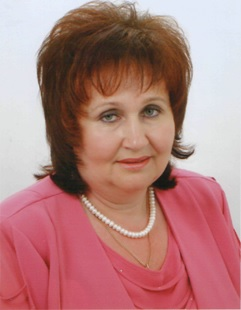
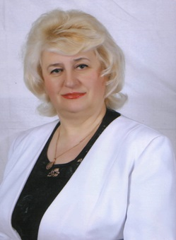
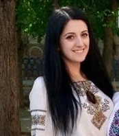

Директор школи
Попович Марія Василівна - вчитель історії, спеціаліст вищої категорії.

Заступник директора з навчально-виховної роботи
Кенюк Ганна Петрівна - вчитель геограйфії, економіки, спеціаліст вищої категорії

Заступник директора з виховної роботи
Арсенич Катерина Богданівна - вчитель математики та інформатки, спеціаліст ІІ категорії.
Методичне об'єднання вчителів природничо-математичного циклу.
Заруцька ольга Федорівна – голова методичного обʼєднання, учитель математики, спеціаліст вищої категорії.
Завдання методичного об'єднання:
- впровадження інноваційних технологій навчання, використання найбільш доцільних форм і методів навчання;
- забезпечення безперервного удосконалення якості викладання, підвищення рівня проведення уроків;
- розвиток творчих здібностей учнів для успішного оволодіння іншими освітніми галузями знань і забезпечення неперервної освіти;
- створення оптимальних умов для розвитку та самореалізації учнів;
- формування бажання і уміння вчитись;
- виховання потреб до навчання упродовж усього життя, свідомого ставлення до навчальної праці;
- інтелектуальний розвиток учнів, виховання позитивних рис характеру.

Методичне об'єднання вчителів початкових класів
Обух Марія Степанівна – голова методичного обʼєднання, учитель початкових класів, спеціаліст вищої категорії.
Завдання методичного об'єднання:
- Підвищуючи науково-методичну підготовку, удосконалюючи педагогічну майстерність, враховуючи індивідуальні здібності та нахили учнів, тісніше пов’язувати вивчення рідної мови, математики та інших предметів.
- Роботу МО спрямувати на всебічний розвиток юної особистості, вдосконалювати методичну культуру кожного педагога, використання його потенційних творчих можливостей, інноваційної діяльності.
- Систематично знайомитись і впроваджувати в практику сучасні освітні технології та інновації.
- Працювати над розвитком в учнів самостійного критичного та креативного мислення, здійснювати індивідуальний підхід до юної особистості, інтерактивного здобування знань.
- Проводити систематично індивідуальну роботу з обдарованими учнями.
Методичне об`єднання вчителів суспільно-гуманітарного циклу
Савченко Галина Йосипівна – голова методичного обʼєднання, учитель історі, спеціаліст вищої категорії.
Завдання методичного об'єднання:
- Упровадження нового Державногостандарту базовоїі повної загальної середньої освіти (у 5-9 класах).
- Організація роботи щодо підготовки учнів до ЗНО, впровадження тестових технологій.
- Робота з обдарованими учнями.
- Моніторинг, корекція та підвищення якості знань учнів.
- Організація семінарів майстерності педагогів з метою ознайомлення з новими методичними розробками.
- Упровадження елементів інноваційних технологій з метою підвищення якості освіти, професійного зростання вчителя.
Методичне об'єднання класних керівників
Лютенко Галина Петрівна – голова методичного обʼєднання, учитель фізики, спеціаліст вищої категорії.
Методичне об’єднання - об’єднує класних керівників школи навколо проблеми «Формування конкурентоспроможної особистості шляхом впровадження інноваційних технологій у навчально-виховному процесі”:
- вчить використовувати нові форми і методи виховної роботи;
- планує виховну роботу класу, школи, педагогічного колективу;
- діагностує рівень досягнень, запити та інтереси дітей,труднощі педагогів у виховній роботі;
- стимулює творчу активність педагогів;
- сприяє створенню сприятливо-стимулюючих умов для формування життєвих компетенцій учнів;
- узагальнює і поширює кращий досвід роботи класних керівників.